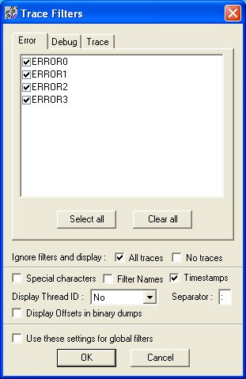

Reporter
Guide de l’utilisateur
Version 3.0 mise à jour le 22/04/2004 pour le langage C# de Visual.NET
Table des matières
- 1.0 Reporter
- 1.1 Qu’est-ce que le Reporter ?
- 1.2 Principales caractéristiques
- 1.3 Le package du Reporter
- 1.4 Lancer l'application
- 2.0 Utiliser le Reporter
- 2.1 Génération des traces
- 2.2 Format des traces
- 2.3 Fenêtre d’affichage dans le Reporter
- 2.4 Filtrer les traces
- 2.5 Les menus du Reporter
- 2.6 La barre d'outils
- 2.7 Résolution de Problèmes
- 3.0 Considérations avancées
- 3.1 Plates-Formes
- 3.2 Choix du désigne
- 3.4 Limitations
1 Reporter
1.1 Qu’est-ce que le Reporter ?
L’application Reporter est un utilitaire de trace qui est utilisé par une application utilisateur sous test pour envoyer des informations en temps réel (datée à la microseconde) au Reporter.
Ces informations peuvent permettre de résoudre les bogues d’une l’application sous test. Ces bogues étant difficiles à résoudre en pas à pas ou en positionnant des break-points dans les outils de développement.
L’application peut donc être ainsi déboguée sans l’utilisation des outils de développement.
Pour visualiser les traces il faut simplement lancer le Reporter puis lancer l’application sous test.
1.2 Principales caractéristiques du Reporter
Le Reporter possède de nombreuses caractéristiques intéressantes, entre autre :
- une très grande capacité d’entrée/sortie, le flot de traces peut-être de plusieurs centaines de Kbits/s
- la possibilité de filtrer les traces pour ne faire apparaître que les traces intéressantes pour le problème à résoudre
- la possibilité de manipuler les traces sous forme de texte en effectuant des recherches, des sauvegardes, des impressions, des copier-collers
- la capacité de transmettre les traces par connexion TCP/IP
Une des caractéristique intéressante du Reporter est la capacité « temps réel » de dater les traces. En effet, le Reporter utilise un timer soft de Windows qui permet de dater les traces à la microseconde.
1.3 Le package du Reporter
Le package Reporter inclut les fichiers suivants :
|
Fichier |
Description |
|
Reporter.exe (Windows Application) |
Main Reporter program. |
|
astrace.dll (Windows DLL) |
Add-on that relay traces to the Reporter. |
|
Reporter guide utilisateur.html |
Documentation utilisateur sur le Reporter (ce fichier) |
Le Reporter est une application multi-tâches Win32. Il ne fonctionne pas sous Windows 3.1 même si Win32s à été installé.
A ce jour l’application Reporter à été utilisé avec succès sur les plates-formes Windows suivantes : Windows 95, 98, Windows NT, Windows 2000 et Windows XP.
1.4 Lancer l’application
Le Reporter peut résider dans n’importe quel répertoire et être lancer à partir de là ou, en double-cliquant sur l’exécutable.
Après l’installation :
La DLL de trace astrace.dll doit se trouver dans le répertoire de l’exécutable de l’application sous test ou dans un répertoire accessible à partir du Path.
Les traces envoyées par l’application sous test ne pourront être affichées dans le Reporter que si l’application sous test parvient à charger la DLL.
2 Utiliser le Reporter
2.1 Génération des traces dans le code de l’application
L’interface entre l’application sous test et la DLL astrace.dll est écrite en C# dans le composant Reporter.cs.
Pour utiliser ce composant ajoutez la directive :
using TraceReporter ;
dans le code de votre application sous test.
La génération de traces consiste à appeler tout d’abord la fonction :
Reporter.TraceInit( appName ); // appName : nom de l'application qui s'affiche dans la barre de titre du Reporter
au plus tôt lors du démarrage de l’application sous test.
Appelez ensuite l’une des fonctions de trace par exemple :
Reporter.Trace( Report.DEBUG0, "Hello World",);
Reporter.TraceObject( Report. DEBUG0, "Hello World" );
Puis terminer la connexion avec le Reporter en appellant la fonction :
Reporter.TraceClose();
L’utilisation des numéros de Report tels que Report.DEBUG0 est décrite au chapitre : Filtrer les traces
2.2 Format des traces
Le premier paramètre de la fonction Reporter.Trace() est un numéro de Report qui va permettre au Reporter de filtrer les traces de l’application sous test voir par la suite : Filtrer les traces).
Les autres paramètres de cette fonction sont à l’image des paramètres de la fonction Console.WriteLine(), l’écriture du composant Reporter.cs rend cette fonction entièrement compatible avec les formats de la fonction du C# : Console.WriteLine().
pour de l’aide sur les formats voir directement l’aide de Visual Studio.
2.3 Fenêtre d’affichage dans le Reporter
Le Reporter initialise une fenêtre de trace pour chaque application sous test dès que la fonction Reporter.TraceInit() est appelée.
Une nouvelle fenêtre de trace s’affiche dans le Reporter dès que la première fonction de trace est appelée.
2.4 Filtrer les traces
L’application Reporter peut filtrer les traces effectuées par l’application sous test afin de n’afficher que les traces nécessaires à la résolution du problème en cours.
Le Reporter filtre les traces à deux niveaux :
- pour l’application en cours à l’aide du bouton de la barre d’outils :
- pour toutes les applications sous test par l’article « Global filter » du menu « View ».
Dans le premier cas, le filtrage s’applique à la connexion en cours avec l’application sous test.
Dans le deuxième cas le filtrage s’appliquera pour toutes les futures connexions.
C’est deux commandes appelle la boite de dialogue « Trace Filters » qui permet de configurer les traces :

Les trois onglets « Error », « Debug » et « Trace » définissent trois catégories de traces.
Dans chaque catégorie quatre niveaux de gravité ou quatre filtres sont définis.
C’est a vous de définir une stratégie de test cohérente concernant l’utilisation de ces trois catégories de traces.
Par exemple :
- utiliser la catégorie « Error » pour toutes les erreurs générées par l’application les exceptions
- utiliser la catégorie « Debug » pour les informations concernant le pistage du déroulement du programme
- utiliser la catégorie « Trace » pour afficher les informations « normale » communiquées par l’application
C’est 12 filtres sont définis dans le composant Reporter.cs a inclure dans l’application sous test :
public const uint
ERROR0 = 0x0100;
public const uint
ERROR1 = 0x0101;
public const uint
ERROR2 = 0x0102;
public const uint
ERROR3 = 0x0103;
public const uint
TRACE0 = 0x1000;
public const uint
TRACE1 = 0x1001;
public const uint
TRACE2 = 0x1002;
public const uint
TRACE3 = 0x1003;
public const uint
DEBUG0 = 0x2000;
public const uint
DEBUG1 = 0x2001;
public const uint
DEBUG2 = 0x2002;
public const uint DEBUG3 = 0x2003;
Si vous désirer ne pas tenir compte des filtres et afficher toutes les traces cochez la case : « All traces »
Si vous cochez la case « Special characters » le Reporter affichera tous les caractères.
Si vous cochez la case « Timestamps » les traces seront datées en microsecondes écoulées depuis la première trace effectuée.
Vous pouvez modifier le séparateur entre les informations du Reporter et les traces en modifiant « Separator ».
Vous pouvez conserver cette configuration des filtres pour les futures connexions avec les applications sous test en cochant « Use these settings for global filters » ce qui reviendrait à avoir modifier les filtres par l’article « Global filters » du menu « View ».
2.5 Les menus du Reporter
Le menu « File »
« Close » : Ferme la fenêtre de traces
« Save » : Sauvegarde du fichier de trace sous le nom par défaut : Trace.txt
« Print » « Print Preview… » « Print Setup… » : Configuration de l’imprimante et impression du fichier de traces
« Exit » : Quitter le Reporter
Le menu « Edit »
« Find », « Find Next », « Find Priev » : Permettent de rechercher une chaîne dans la fenêtre de traces active
« Draw Line » : Dessine une ligne dans la fenêtre de trace
« Goto Line » : Permet de positionner le curseur sur une ligne rechercher par son numéro
Le menu « View »
« Global font » : Permet de modifier la font pour toutes les connexions
« Global filters » : Affiche la boite de dialogue « Trace Filters » pour toutes les connexions
« Always on top » : Permet de garder l’application Reporter devant la fenêtre active (pratique pour déboguer)
Le menu « Windows »
Permet d’arranger les fenêtres ouvertes
Le menu « Help »
« Tip of the Day… » : Ouvre une boite de dialogue sur des petits conseils d’utilisation du Reporter
« About Reporter » : Donne des informations sur la version du Reporter utilisée actuellement
2.6 La barre d’outils
|
|
Sauvegarder le contenu de la fenêtre de trace dans un fichier |
|
|
Imprimer le contenu de la fenêtre de trace |
|
|
Sélectionner la totalité du texte de la fenêtre de trace |
|
|
Copier le texte sélectionner dans le Clipboard |
|
|
Effacer le contenu de la fenêtre de trace |
|
|
Dessiner une ligne de séparation dans la fenêtre de trace |
|
|
Rechercher une chaîne de caractère dans le texte de la fenêtre de trace |
|
|
Rechercher l’occurrence suivante de la chaîne spécifiée |
|
|
Rechercher l’occurrence précédente de la chaîne spécifiée |
|
|
Garder la fenêtre de l’application Reporter toujours visible, au dessus des autres applications |
|
|
Configurer les filtres pour la connexion courante avec l’application sous test |
|
|
Modifier la font du texte de la fenêtre courante |
|
|
Configurer les filtres pour toutes les futures connexions |
|
|
Modifier la font du texte pour toutes les futures fenêtres |
2.7 Résolution de Problèmes
Si la DLL de trace astrace.dll n’aparait pas dans le répertoire d’installation c’est peut-être parce que Windows est configuré pour ne pas afficher les fichiers caché.
Modifier cette propriété
Si les traces ne s’affichent pas dans le Reporter vérifiez que :
- La DLL astrace.dll est bien chargée par votre application (elle est accessible dans le répertoire de l’exécutable ou dans le Path).
- Les filtres de la boite de dialogue « Trace Filters » sont correctement configurés (en cas de doutes, cochez la case « All traces »).
- Votre code sous test fait bien appel à Reporter.TraceInit() avant d’utiliser les fonctions de trace.
Pour fonctionner l’application Reporter utilise un certaines DLL de Windows comme OLE ou Winsock2,
des mises à jour systèmes sont peut-être nécessaires sur d’anciens systèmes.
Visitez les sites de MicroSoft :
OLE DLLs referenced by the Reporter
Winsock 2.0 update
3.0 Considérations avancées
3.1 Plates-formes
Le Reporter peut-être utilisé avec différentes plates-formes de développement.
Le composant Reporter.cs a été écrit pour être utilisé par Visual Studio.NET mais d’autres implémentations existent.
3.2 Choix du désigne
- CR ('\r'), LF ('\n') et CR-LF ne sont pas reconnus comme délimiteurs pour des raisons de portabilité. Ne pas les utilisé dans les traces.
- Le filtrage s’effectue dans le receveur, cela consomme de la bande passante mais permet de garantir la stabilité du comportement de l’application sous test quel que soit le filtrage effectué.
- Plusieures tâches concurrentes peuvent émettre traces ensemble.
- La fenêtre texte scrolle automatiquement sauf si le curseur a été déplacé par l’utilisateur. Pour retrouver le scrolle automatique de la fenêtre, replacez le curseur sur le dernier caractère.
3.4 Limitations
Les traces en entrée sont stockées dans un buffer circulaire dont on peut ajuster la taille, les dernières sont conservées.
Si des traces ont été poubellisées, le Reporter le signalera par le symbole suivant […] en haut de la fenêtre de trace.